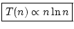

Next: Timings for Various Sorting
Up: Merge Sort
Previous: Merge Sort
Contents
Index
As before we look for a recurrence relation. We will ignore the special
case j - i < 3 which occurs at the end of each branch. Let T(n) be the
average time to sort n elements. The sort consists of sorting two lists
of `half' the length and then combining them by a merge. So
T(
n) =
T(floor(
n/2)) +
T(ceiling(
n/2)) +
 n
n.
We have already studied this recurrence and have found that, roughly
speaking,

So this algorithm, like Quicksort, is an O(n ln n) sorting algorithm.
Ian Craw
2001-04-27